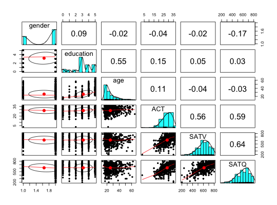

Self reported scores on the SAT Verbal, SAT Quantitative and ACT were collected as part of the Synthetic Aperture Personality Assessment (SAPA) web based personality assessment project. Age, gender, and education are also reported. The data from 700 subjects are included here as a demonstration set for correlation and analysis.
data(sat.act)
A data frame with 700 observations on the following 6 variables.
gendermales = 1, females = 2
educationself reported education 1 = high school ... 5 = graduate work
ageage
ACTACT composite scores may range from 1 - 36. National norms have a mean of 20.
SATVSAT Verbal scores may range from 200 - 800.
SATQSAT Quantitative scores may range from 200 - 800
hese items were collected as part of the SAPA project (http://sapa-project.org)to develop online measures of ability (Revelle, Wilt and Rosenthal, 2009). The score means are higher than national norms suggesting both self selection for people taking on line personality and ability tests and a self reporting bias in scores.
See also the iq.items data set.
http://personality-project.org
Revelle, William, Wilt, Joshua, and Rosenthal, Allen (2009) Personality and Cognition: The Personality-Cognition Link. In Gruszka, Alexandra and Matthews, Gerald and Szymura, Blazej (Eds.) Handbook of Individual Differences in Cognition: Attention, Memory and Executive Control, Springer.
#> vars n mean sd median trimmed mad min max range skew #> gender 1 700 1.65 0.48 2 1.68 0.00 1 2 1 -0.61 #> education 2 700 3.16 1.43 3 3.31 1.48 0 5 5 -0.68 #> age 3 700 25.59 9.50 22 23.86 5.93 13 65 52 1.64 #> ACT 4 700 28.55 4.82 29 28.84 4.45 3 36 33 -0.66 #> SATV 5 700 612.23 112.90 620 619.45 118.61 200 800 600 -0.64 #> SATQ 6 687 610.22 115.64 620 617.25 118.61 200 800 600 -0.59 #> kurtosis se #> gender -1.62 0.02 #> education -0.07 0.05 #> age 2.42 0.36 #> ACT 0.53 0.18 #> SATV 0.33 4.27 #> SATQ -0.02 4.41pairs.panels(sat.act)